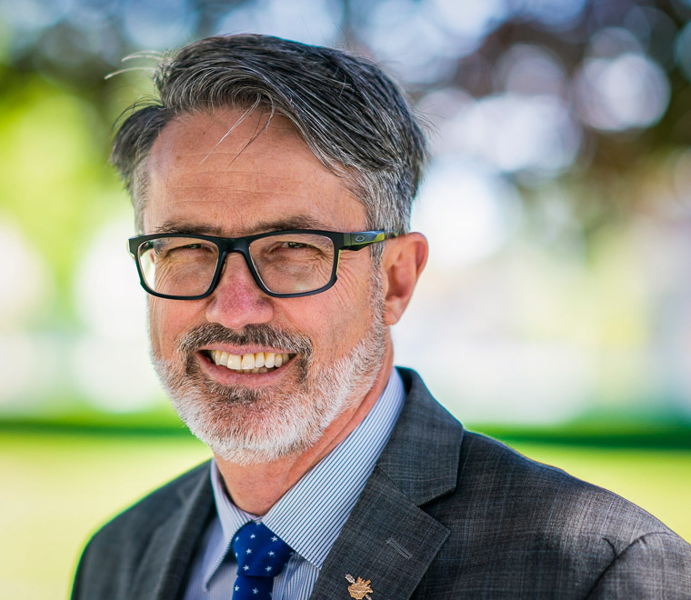
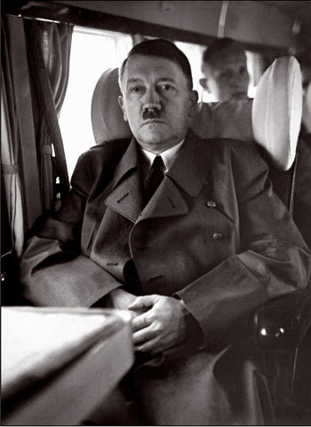

BC Liberals - Laurie Throness
November 24th, 2020
Abbotsford News:
TDC_ARTICLE_START
Throness and his campaign staff figure there are roughly 5,000 mail-in ballots still to be counted, discounting the ones that haven’t been returned. In Chilliwack-Kent, there were 7,650 mail-in packages requested, according to Elections B.C. data.
By the time election night counting stalled out toward midnight, four hours after the polls closed, NDP candidate Kelli Paddon held the lead over Throness by 195 votes, 5,199 to 5,004.
TDC_ARTICLE_STOP
Laurie Throness
Spoiler warning, at the time of this article, he has already lost.
TDC_ARTICLE_START
Throness has faced widespread criticism throughout the 2020 campaign. During a Rotary Club all-candidates meeting via Zoom, the ex-B.C. Liberal expressed his concerns about the NDP’s campaign promise of free birth control, saying it “contains a whiff of the old eugenics,” going on to suggest providing free contraception is akin to an unforced measure ensuring the poor don’t have more babies, which would create more poor people. It was this comment that ultimately triggered Throness’s resignation from the B.C. Liberals. Throness has since apologized for the “damage done to my MLA colleagues and [B.C. Liberals leader Andrew Wilkinson].”
Prior to this, in late summer, the Vancouver Pride Society (VPS) banned the B.C. Liberals from the 2020 Vancouver Pride Parade if Throness was not removed from caucus or as child care critic. The VPS criticized Throness after he and 13 other B.C. Liberal MLAs advertised in Christian magazine “The Light.” The VPS stated the magazine has hosted homophobic and transphobic content, and members of the B.C. Liberals – including Wilkinson – have since apologized. Throness offered no comment other than the magazine aligned with his biblical Christian views.
TDC_ARTICLE_STOP

Wow, I guess that apology really did you some good. It's nice to know that the priorities for Donor-Center Party happen to be keeping HIV Positive Faggots who want access to children happy, and they're perfectly willing to lose elections in order to keep it that way.
Imagine being mad you can't march with these people
TDC_ARTICLE_START
During the all-candidates debate a few months later, Throness slammed his opponents for trying to paint him as a strong supporter of conversion therapy.
“That’s just wrong,” Throness said in his opening remarks on Oct. 14. “In fact, I’ve never made a statement about conversion therapy and I decry and oppose any course of practice to try to change another’s identity.”
Further on the issue of LGBTQ rights, Throness said he was for “equality for all,” stating he doesn’t rule out legislation designed to further improve the recognition of rights and quality of life for LGBTQ individuals.
Throness blamed his portrayal in the media as one of the factors that has significantly hurt his re-election chances.
“I have always been a tolerant person, but I’m labelled as intolerant. The media is a bit of an echo chamber and once an opinion is baked in, I can protest as much as I like [and it won’t help]. I think that hurt me a lot in the election.”
Moving forward, if elected, Throness said he would conduct himself responsibly in Victoria.
“I always feel that the constituents are the boss, and I will be guided by what they tell me. I’m not going to be impetuous in what I say; my words will be carefully chosen.”
Throness also stated his lengthy political record stands as a testament to the “enduring power” of social conservatism in the riding and perhaps the province as a whole.
TDC_ARTICLE_STOP
So apparently "Social Conservatism," is just LGBTQ shit, at this point. I mean, that's true, it's just sort of nice to see Conservatism pretty much explicitly shown to be a tempermant, more than an actual set of policy beliefs. This guy will do nothing Policy-Wise, but he'll, I don't know, put on a suit and tie and not be a faggot himself? I guess that's good enough for some people, but not for me.